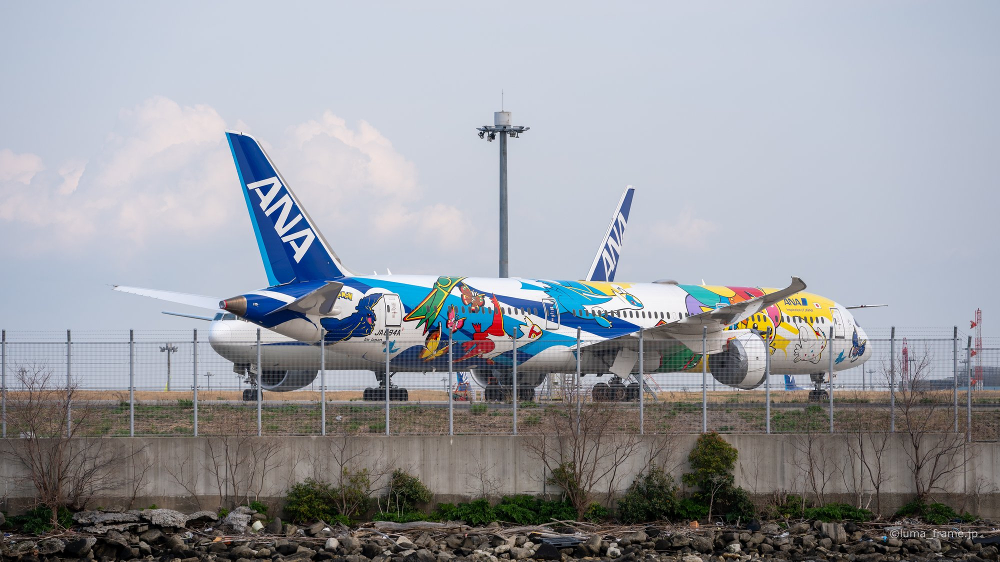
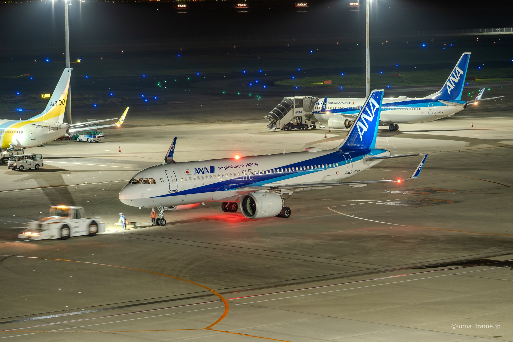
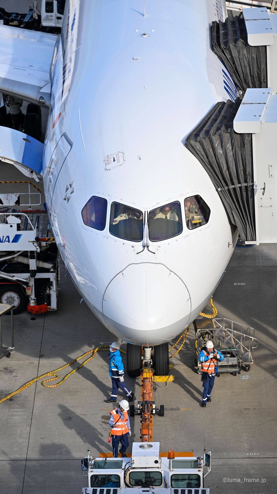
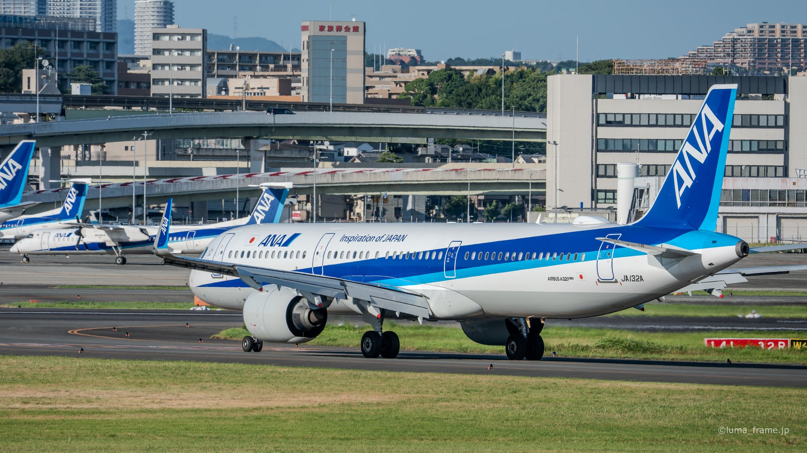
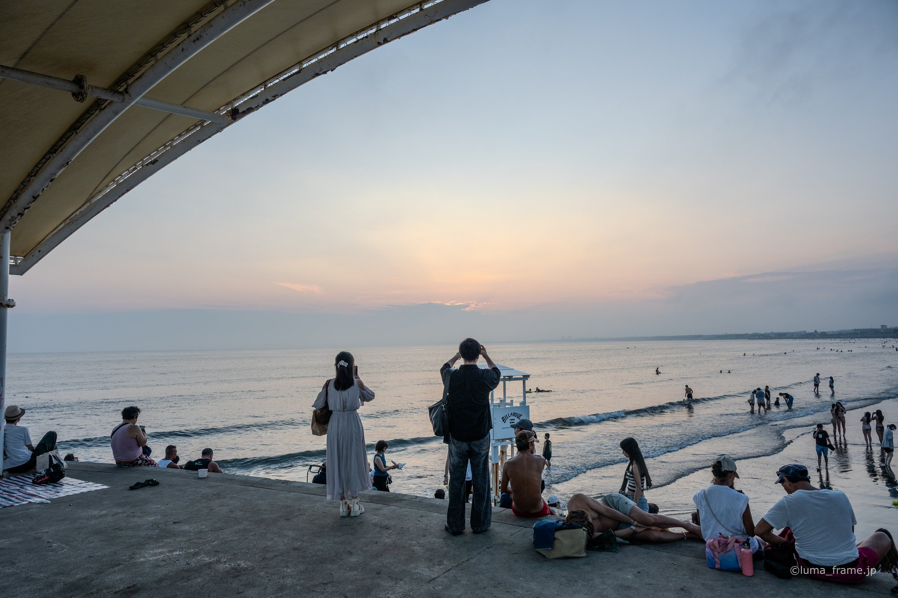
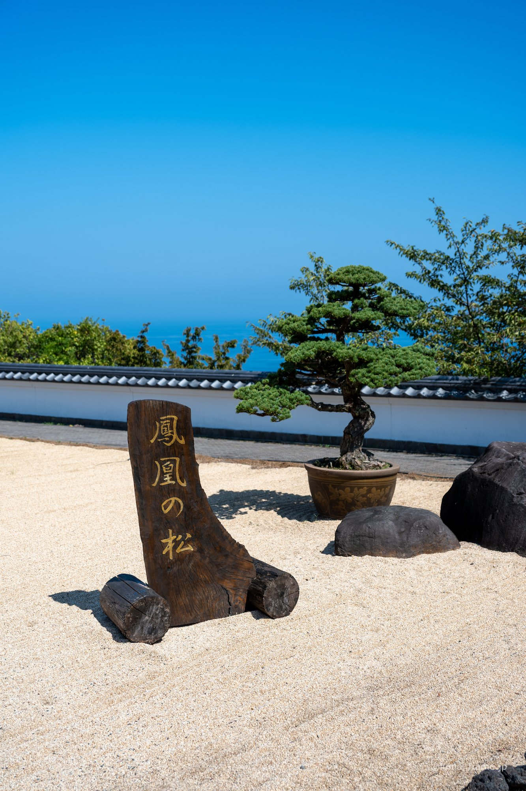
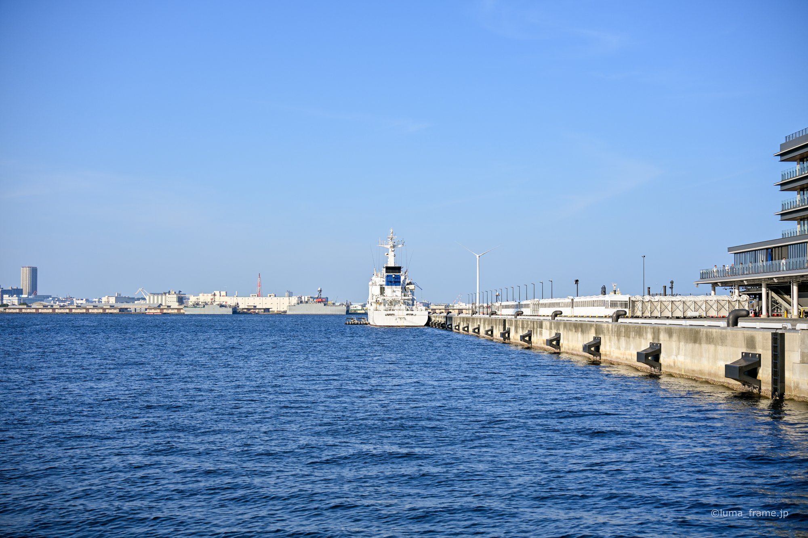

Seven shooting notes from Haneda, Itami, Keihinjima, Shonan, Atami and Yokohama, on where I stood, when, and what the camera was set to.

Eighty-two minutes at Keihinjima Tsubasa Park in Ota City, Tokyo, where arriving aircraf…

Twenty-two night frames from the Haneda observation decks, from a thirteen-second exposu…

31 December 2025, 14 February 2026, 23 February 2026. Thirty-four frames from the Haned…

10 August 2026 at Itami Skypark, from 17:03 to 19:44. Twenty-eight frames that begin at …

From Katase Beach to Enoshima and along the Enoden line. Thirty-two frames from three days o…

31 August 2025, AKAO Forest and Kiunkaku in a single afternoon. Twenty-five frames, ISO …

Yokohama on 17 August 2025, alternating between a 50-400mm and a 35mm f/1.4. Twenty-two …
Tell me the date and what the photos are for, and I'll send a free quote.
Book a free consultation →Recent frames from each location go up on the account, including ones that never make it onto this site.